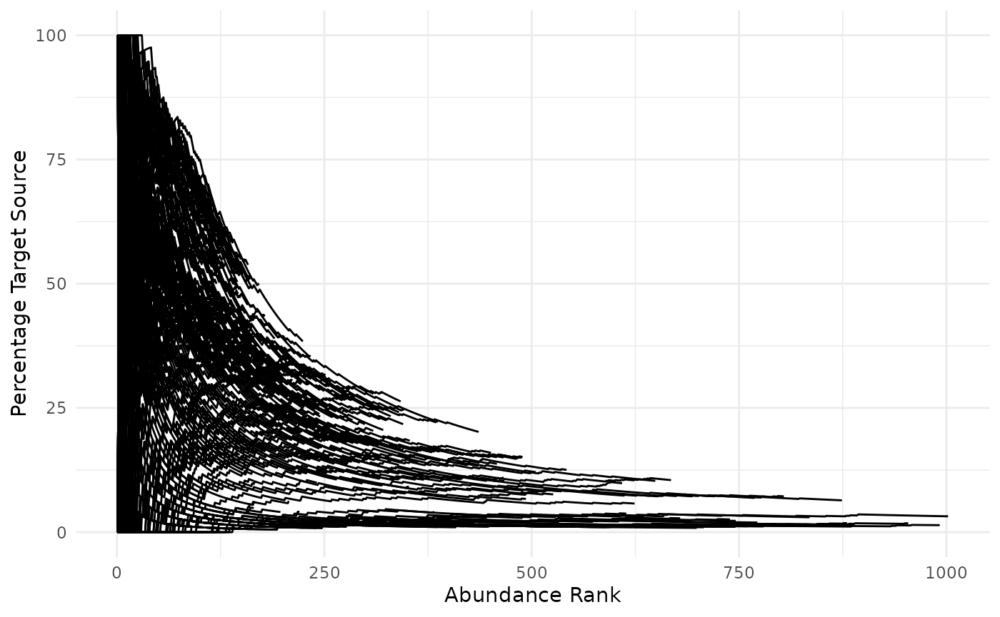
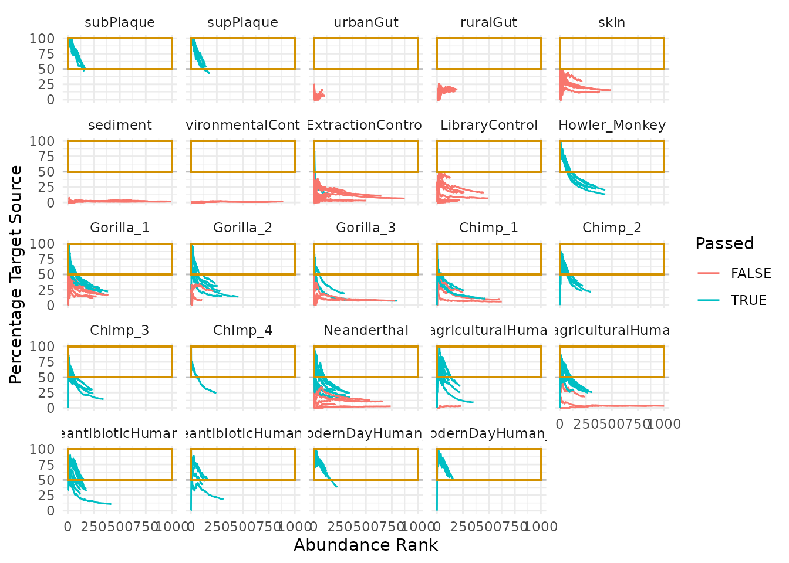

Introduction to cuperdec
James A. Fellows Yates
2021-09-12
Source:vignettes/cuperdec-intro.Rmd
cuperdec-intro.RmdIntroduction
This vignette gives an example on how to use the cuperdec R package. The aim of this package is to assist in the generation of what I have termed ’cumulative percent decay curves`.
These visualisations were originally developed to assist in the identification of the abundance and prevalence of microbial taxa in ancient microbiome samples, with samples with high abundance and prevalence of the expected original microbiome, when comparing to modern samples from the same microbiome source. However, this concept could potentially be applied in other contexts.
The curves consist of an ‘abundance rank’ (x-axis), and a percentage of taxa from the target (i.e.original microbiome) source (y-axis). The curve is generated by asking at each rank, what percentage of the taxa up until this rank have been from the target source. This vignette will show examples later on.
The package also applies a few simple filtering functions, which helps to automate the detection of samples that are similar to modern comparative samples, versus those that do not have the same signal. This can then be used to inform downstream analyses in terms of discarding potentially unreliable samples.
Setup
You will require the library dplyr for this tutorial! Please install this if you have not already.
Input
Required
The generation of these curves require at a minimum:
- A TSV formatted ‘OTU Table’ with the following characteristics:
- Column names: e.g. Taxon, Sample_A, Sample_B, Sample_C
- First Column: a list of taxa
- Cells: some numeric value representing number of observations of a taxon in a sample
| Taxon | Sample_A | Sample_B | Sample_C |
|---|---|---|---|
| Taxon_1 | 0 | 102 | 237 |
| Taxon_2 | 10023 | 7483 | 298 |
| Taxon_3 | 6 | 28 | 3409 |
| … | … | … | … |
- A TSV formatted isolation source table with two columns:
- A list of taxa that matches the names in your OTU table (e.g. Tannerella forsythia, Helicobacter pylori, Mycobacterium kansasii)
- The corresponding isolation sources of each taxon, i.e. where the particular reference sequence of the taxon was extracted (e.g. oral cavity, gut, soil)
| Taxon | Sample_A |
|---|---|
| Taxon_1 | oral |
| Taxon_2 | gut |
| Taxon_3 | unknown |
| … | … |
Optional
Additionally, you can supply:
- A TSV formatted metadata table, which contains:
- A column with sample names (matching OTU table)
- A grouping column (i.e. allows grouping of samples to be displayed together)
| Samples | Other | Group | Other |
|---|---|---|---|
| Sample_A | False | Group_A | 23,000 |
| Sample_B | True | Group_A | 4,000 |
| Sample_C | True | Group_B | 15,000 |
| … | … | … | … |
In this example, we will use a dataset from Fellows Yates et al. 202X. This study looked at microbiome DNA isolated from dental calculus of ancient skeletons. We wanted to try to identify samples which appeared to have still displayed evidence of the remains original microbes that makes up a tooth biofilm. This allowed us to discard any samples that were so degraded no signature of the original microbiome remained, and that could negatively influence downstream analyses.
This assessment can be done by by comparing the curves of the ancient samples with modern samples of known isolation sources.
Data Loading
First we will load the cuperdec package, and helper libraries to help make reading R code easier in this vignette.
Next we can load the example dataset that comes with the package with the helper functions that load and format the tables that can be used by downstream cuperdec functions.
The example data is stored within the package, so we first need find the locations of these in your system.
:warning: You would not normally have to run this step for your own analysis!
Now we can use the loading functions to load the tables for you.
You can either supply your table as a path to a TSV on your computer, or alternatively a data frame/tibble that you’ve already loaded into R.
The function load_taxa_table() will then convert a OTU table into long format and rename columns to names that downstream functions will use.
taxatable <- load_taxa_table(cuperdec_taxatable_ex) %>%
print()## # A tibble: 66,187 × 3
## Taxon Sample Count
## <chr> <chr> <dbl>
## 1 Acidobacterium capsulatum ARS020.A0101.SG1.2 482
## 2 Acidobacterium capsulatum ARS012.A0101.SG1.2 278
## 3 Acidobacterium capsulatum ERR1883438 232
## 4 Acidobacterium capsulatum ERR1883424 407
## 5 Acidobacterium capsulatum ARS013.A0101.SG1.2 566
## 6 Acidobacterium capsulatum ARS004.A0101.SG1.2 384
## 7 Acidobacterium capsulatum ARS017.A0101.SG1.2 1005
## 8 Acidobacterium capsulatum ARS005.A0101.SG1.2 429
## 9 Acidobacterium capsulatum ERR1883421 181
## 10 Acidobacterium capsulatum ARS011.A0101.SG1.2 291
## # … with 66,177 more rowsAlternatively you can provide a path directly to a TSV table (not run here), rather than an already loaded object.
taxatable <- load_taxa_table("/<path>/<to>/<file>.tsv")Next we need to useload_database() to load the file which describes the original isolation source of each OTU. Again, this function can take either a path to a file on your system, or a data frame already loaded into R.
This function takes two parameters, in addition to the the isolation source table itself, and you also need to supply the name of the target isolation source you are looking for within each sample.
In this case, we want to identify the all the taxa in our samples that have been isolated in from the oral cavity - indicated in the database file’s second column as ‘oral’. The load_database() function will then indicate for every Taxon that is derived from the target source as ‘True’ and everything that isn’t as ‘False’.
database <- load_database(cuperdec_database_ex, target = "oral") %>%
print()## # A tibble: 569 × 2
## Taxon Isolation_Source
## <chr> <lgl>
## 1 Abiotrophia defectiva TRUE
## 2 Achromobacter xylosoxidans TRUE
## 3 Acinetobacter baumannii FALSE
## 4 Actinobaculum sp. oral taxon 183 TRUE
## 5 Actinomyces cardiffensis TRUE
## 6 Actinomyces dentalis TRUE
## 7 Actinomyces georgiae TRUE
## 8 Actinomyces gerencseriae TRUE
## 9 Actinomyces graevenitzii TRUE
## 10 Actinomyces israelii TRUE
## # … with 559 more rowsFinally, in the example study, we wanted to compare the curves of different groups of our samples, with each different known-isolation comparative sample. Therefore, we will load an optional file carrying various metadata about each sample
For this we use cuperdec_metadata_ex(), supplying the metadata TSV, the name of the column with sample names, and the name of the column with the groups. You can have other columns in the metadata file, but only the two indicated will be taken downstream.
metadata_map <- load_map(cuperdec_metadata_ex,
sample_col = "#SampleID",
source_col = "Env") %>%
print()## # A tibble: 229 × 2
## Sample Sample_Source
## <chr> <chr>
## 1 ABM006.A0101 Gorilla_2
## 2 ABM007.A0101 Chimp_3
## 3 ABM008.A0101 Chimp_3
## 4 ARS001.A0101.SG1.2 EnvironmentalControl
## 5 ARS004.A0101.SG1.2 EnvironmentalControl
## 6 ARS005.A0101.SG1.2 EnvironmentalControl
## 7 ARS010.A0101.SG1.2 EnvironmentalControl
## 8 ARS011.A0101.SG1.2 EnvironmentalControl
## 9 ARS012.A0101.SG1.2 EnvironmentalControl
## 10 ARS013.A0101.SG1.2 EnvironmentalControl
## # … with 219 more rowsCalculating a simple curve
Now, with all our data loaded we can calculate the cumulative percent curves per sample.
The way this works is to order (per sample) each taxon by it’s abundance. Then, calculate the fraction of taxa at each rank, that have come from your ‘target’ source ( including all ranks up until the current one).
A schematic can be seen on Figure R8 in GitHub repository of Fellows Yates et al. (202X).
To do these of the taxa table loaded above, we use the calculate_curve() function.
curves <- calculate_curve(taxatable, database = database) %>%
print()## # A tibble: 66,187 × 4
## # Groups: Sample [229]
## Sample Taxon Rank Fraction_Target
## <chr> <chr> <int> <dbl>
## 1 ABM006.A0101 Actinomyces meyeri 1 100
## 2 ABM006.A0101 Actinomyces sp. oral taxon 414 2 100
## 3 ABM006.A0101 Campylobacter gracilis 3 100
## 4 ABM006.A0101 Pseudopropionibacterium propionicum 4 100
## 5 ABM006.A0101 Fusobacterium nucleatum 5 100
## 6 ABM006.A0101 Olsenella sp. oral taxon 807 6 100
## 7 ABM006.A0101 Eikenella corrodens 7 100
## 8 ABM006.A0101 Streptococcus troglodytae 8 100
## 9 ABM006.A0101 Ottowia sp. oral taxon 894 9 100
## 10 ABM006.A0101 Fretibacterium fastidiosum 10 100
## # … with 66,177 more rowsHere you can see a Rank column, which represents the abundance rank of each taxon (from smallest to largest rank representing most to least abundant), and a fraction of all taxa up to that rank that are derived from your target isolation source.
cuperdec also offers a helper function for fast plotting.
plot_cuperdec(curves)
Note that these functions just run basic
ggplot()functions with a couple of preferred theming based on the preferences of the package’s author. You can adapt the functions for your own function by running the internalplot_simplefunction without brackets to see the ggplot2 function, and copying the ggplot2 function from there.
Due to the large number of samples in the example data, we cannot see much. To improve this, we can use a second plotting function to separate each group of samples into their own window.
plot_cuperdec(curves, metadata_map)
This is much easier to visualise, and we can start to see some differences.
Note that if you wanted to re-order the order panels, you can simply convert the ‘Sample_Source’ column of the metadata_map to factors, with your preferred ordering. For example:
## Set ordering of groups
group_order <- c("subPlaque",
"supPlaque",
"urbanGut",
"ruralGut",
"skin",
"sediment",
"EnvironmentalControl",
"ExtractionControl",
"LibraryControl",
"Howler_Monkey",
"Gorilla_1",
"Gorilla_2",
"Gorilla_3",
"Chimp_1",
"Chimp_2",
"Chimp_3",
"Chimp_4",
"Neanderthal",
"PreagriculturalHuman_1",
"PreagriculturalHuman_2",
"PreantibioticHuman_1",
"PreantibioticHuman_2",
"ModernDayHuman_1",
"ModernDayHuman_2"
)
metadata_map <- metadata_map %>%
dplyr::mutate(Sample_Source = factor(Sample_Source, levels = group_order))
# Re-plot
plot_cuperdec(curves, metadata = metadata_map)
Now we can see that the calculus samples (Howler monkey onwards), look much more like the Plaque samples, compared to e.g. sediment and skin.
Preservation filtering
Simple
These visualisation of these difference curves already start help us to distinguish well-preserved samples from those that maybe have few oral taxa left remaining. However, we can also try and use the observations from the plot above to set up cut-off filters that allows us to make consistent ‘keep’/‘discard’ decisions.
For example, other than a single extraction control, all non-plaque comparative samples do not exceed a minimum ‘Percentage Target Source’ threshold of ~50%.
Using observations like this cuperdec offers a range of different functions that perform various cut-off assessments between samples. For example, we can use simple_filter() to indicate any sample that exceeds a minimum percent source threshold of 50% at any point along the abundance rank.
filter_result <- simple_filter(curves, percent_threshold = 50) %>% print()## # A tibble: 229 × 2
## Sample Passed
## <chr> <lgl>
## 1 ABM006.A0101 TRUE
## 2 ABM007.A0101 TRUE
## 3 ABM008.A0101 TRUE
## 4 ARS001.A0101.SG1.2 FALSE
## 5 ARS004.A0101.SG1.2 FALSE
## 6 ARS005.A0101.SG1.2 FALSE
## 7 ARS010.A0101.SG1.2 FALSE
## 8 ARS011.A0101.SG1.2 FALSE
## 9 ARS012.A0101.SG1.2 FALSE
## 10 ARS013.A0101.SG1.2 FALSE
## # … with 219 more rowsWe can then supply this information as an additional parameter for plotting.
plot_cuperdec(curves, metadata_map, filter_result)
As a demonstration, the defined cut-off means that any curve that enters the yellow box at any abundance rank (i.e. above the minimum 50% threshold at any point across the x-axis) is considered as being Passed.

Hard Burnin
The list of samples generated by simple_filter() above could now be used to discard those samples that did not pass the cut off from downstream analysis.
However, the one ExtractionControl sample that exceeds 50% for only a couple of ranks, actually looks like for the most part that it doesn’t look like it has much ‘oral’ taxa at all. It may just be spurious hits, or an over-weighting due to the small denominator of the abundance rank in the early ranks.
Therefore, we can additionally apply a simple ‘burn in’, after which we start considering whether the curve exceeds the minimum percent threshold. In other words, only consider whether a given curve goes above 50% after X amount of ranks (given here as 1.0% of the ranks), for each curve. Alternatively phrase, ignore the first 10% ranks of each sample before checking if the curve goes above 50% of the target source.
To do this on the full dataset
burnin_result <- hard_burnin_filter(curves,
percent_threshold = 50,
rank_burnin = 0.1)
plot_cuperdec(curves, metadata_map, burnin_result)
This is better, but now we have a Neanderthal and a few pre-agricultural humans that clearly exceed 50% for quite a few ranks, so while preservation might still be lower than others, they may still have sufficient preservation that we still want to keep these samples for downstream.
We can also supply an extra parameter to plot_cuperdec Lets look a bit more closely at the curves to by restricting the X-axis Ranks to 250 ranks.
plot_cuperdec(curves, metadata_map, burnin_result, restrict_x = 250)
We can again graphically demonstrate the burn-in thresholds of a single sample for this filter, following the yellow-box example in the previous section, see the following image.

Note this image is purely for demonstrative purposes, and is not from a
cuperdecfunction.
You can see the boxes specifying where the curves of each sample must enter has now shifted away from 0 along the x-axis.
One sample’s curve enters its box (yellow, i.e. after the 10% burning threshold of24 the abundance rank) and therefore is considered passing the minimum percent target source threshold. In contrast, the ‘failed’ sample has a curve falls just outside of its box (pink), has a 10% burn-in threshold of rank 31.
The different boxes emphasise that the burn-in is calculated on a per-sample basis, and that there is not a single abundance rank cut-off for all samples.
However, when looking back at the whole dataset definitely see that there are some Neanderthals that are excluded with a hard burn-in of 10% despite having otherwise a curve pretty similar to other Neanderthals. This could be because they have unusually long tails of very low abundant taxa, meaning that the ‘peak’ exceeding the minimum threshold of 50% occurs within the first 10% of ranks, however this is still the region of theabundance rank that would give the strongest oral taxon signal in very old samples.
Adaptive Burnin
Instead, we can try and customise the burn-in setting on a per-sample basis, based on the amount of ‘fluctuation’ that occurs early in the curves (based on the small fraction denominators).
This is performed here by only starting to considering whether a curve exceeds minimum percentage target source threshold (50%), from the point at which the difference of the percentage target source of one rank to the next, does not exceed the standard-deviation of all differences.
burnin_result <- adaptive_burnin_filter(curves, percent_threshold = 50)
plot_cuperdec(curves, metadata_map, burnin_result, restrict_x = 250)
As with the hard burn-in filter, each curve (i.e., sample) gets a different
abundance rank, after which exceeding of the minimum percent target source is considered.
Once we are happy that the curves appear to be distinguishing between well-preserved samples and those with a low ‘endogenous’ microbial content, we can use the list of samples that did not our thresholds to remove from downstream analysis.
discard_list <- burnin_result %>% filter(!Passed)
discard_list## # A tibble: 120 × 2
## Sample Passed
## <chr> <lgl>
## 1 ARS001.A0101.SG1.2 FALSE
## 2 ARS004.A0101.SG1.2 FALSE
## 3 ARS005.A0101.SG1.2 FALSE
## 4 ARS010.A0101.SG1.2 FALSE
## 5 ARS011.A0101.SG1.2 FALSE
## 6 ARS012.A0101.SG1.2 FALSE
## 7 ARS013.A0101.SG1.2 FALSE
## 8 ARS015.A0101.SG1.2 FALSE
## 9 ARS017.A0101.SG1.2 FALSE
## 10 ARS020.A0101.SG1.2 FALSE
## # … with 110 more rowsCustom filters
You can of course write your own functions with your own filtering techniques, the only requirement is that you produce a two column output:
- Sample: the names of each sample represented in the curves file.
- Passed: a logical (TRUE/FALSE) column indicating whether a sample passed the filter or not